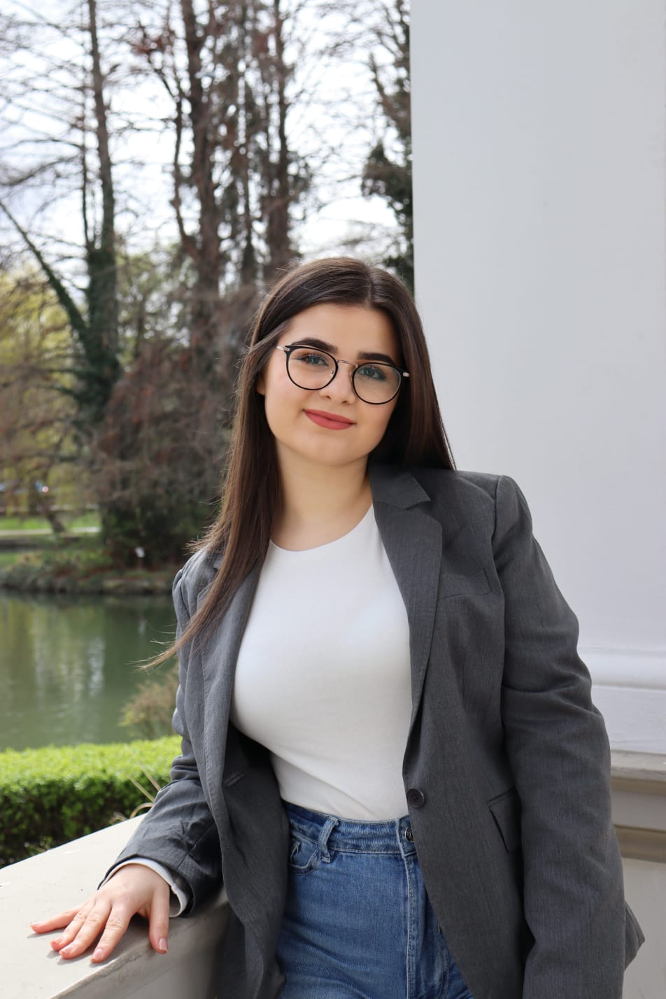
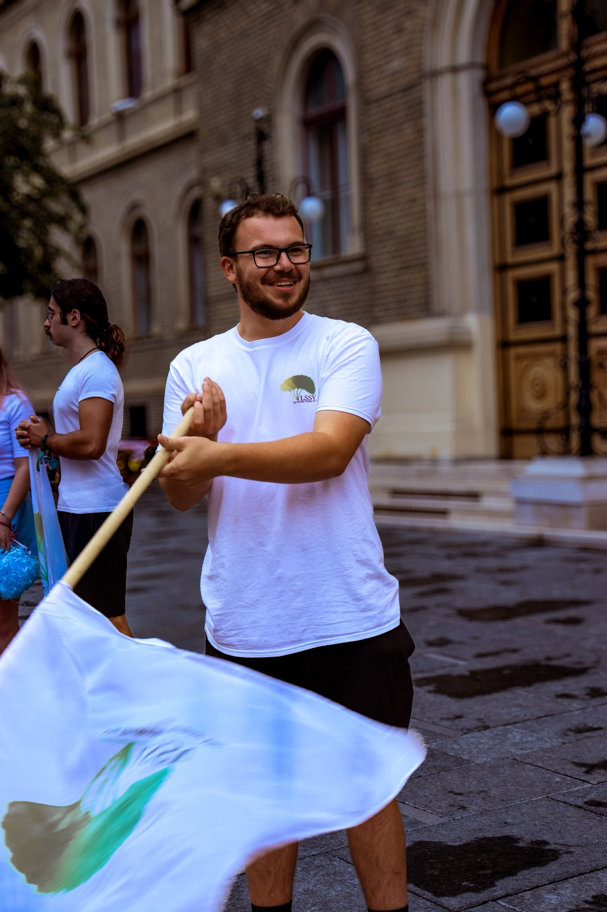

Liga Studenților Științelor Vieții
Biroul Executiv

Suciu Alin
Președinte
alin.suciu2004@gmail.com | +40 745 375 776
Sunt Suciu Alin, dar toată lumea îmi spune Suciu. Sunt o persoană energică, motivată și pasionată de lucrul cu oamenii. Îmi place să găsesc soluții, să transform ideile în rezultate și să demonstrez că „nu se poate” este doar punctul de plecare către reușită. Mă implic cu entuziasm în proiecte, sunt deschis la colaborare și cred în puterea unei echipe unite de a face lucrurile să se întâmple.
Nicola Daria-Alexia
Vicepreședinte pe Relații Interne
darianicola0304@yahoo.com | +40 726 007 270
Sunt Daria, o persoană energică, pasionată și mereu implicată în tot ce fac. Îmi place să contribui activ la comunitate și să aduc idei noi care să facă diferența în proiectele LSSV. Cred în puterea colaborării și mă bucur să lucrez alături de oameni dedicați, pentru a transforma ideile în acțiuni concrete. Entuziasmul meu mă ajută să rămân motivată și să-i inspir pe cei din jur, iar implicarea mea autentică se reflectă în fiecare inițiativă în care mă implic.

Nuț Daria
Vicepreședinte pe Relații Externe
nutdaria2003@gmail.com | +40 747 411 066
Sunt Daria, o persoană implicată, perfecționistă și perseverentă. Îmi place să abordez fiecare proiect cu atenție și dedicare, asigurându-mă că rezultatele sunt de cea mai bună calitate. Perseverența mea mă ajută să depășesc provocările și să continui să merg înainte chiar și atunci când drumul devine dificil. Cred cu tărie în valoarea muncii susținute și în impactul pozitiv pe care îl putem avea în comunitate prin implicare reală. Fiecare inițiativă la care contribui este pentru mine o oportunitate de a învăța, de a crește și de a face diferența.
Miclăuș Rareș
Secretar General
raresmarcus0205@gmail.com | +40 740 610 428
Sunt Rareș, o persoană practică, mereu cu picioarele pe pământ, dar cu dorința de a face o diferență pentru cei din jur. Îmi place să ajut oamenii, în funcție de posibilitățile mele, și să contribui la succesul echipei sau al proiectelor la care particip. Cred că ieșirea din zona de confort este esențială pentru dezvoltare, așa că mă provoc constant să încerc lucruri noi și să-i încurajez și pe alții să facă același lucru. Pentru mine, implicarea și sprijinul acordat celorlalți nu sunt doar gesturi, ci o modalitate de a învăța, de a crește și de a avea un impact pozitiv în comunitate.

Vicepreședinte pe Relații Interne
Vicepreședintele pe Interne se ocupă de gestionarea activităților din interiorul organizației, coordonând departamentele, voluntarii și procesele interne. Rolul său este de a menține o bună comunicare, organizare eficientă și un flux clar al activităților, contribuind la desfășurarea optimă a proiectelor și la consolidarea echipei.

Președinte
Președintele reprezintă asociația atât în relația cu conducerea universității, cât și în cadrul parteneriatelor externe, fiind principalul coordonator al direcției strategice a organizației. Acesta supervizează activitatea generală, asigură coerența între departamente și veghează la respectarea valorilor și obiectivelor ligii.
Vicepreședinte pe Relații Externe
Vicepreședintele pe Externe este responsabil de relațiile cu partenerii, sponsorii și alte organizații studențești, având misiunea de a dezvolta imaginea LSSV și de a crea colaborări durabile. Prin implicare activă și reprezentare constantă, acesta susține promovarea inițiativelor ligii și extinderea rețelei de colaborare.